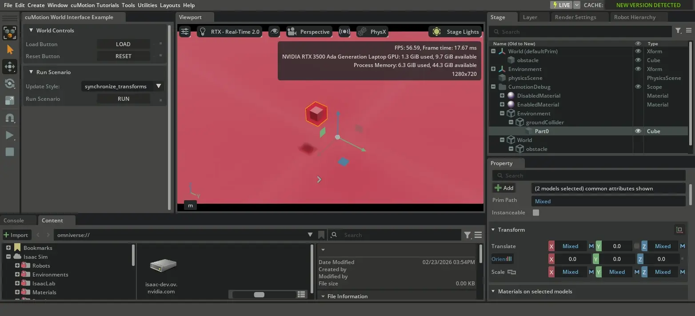
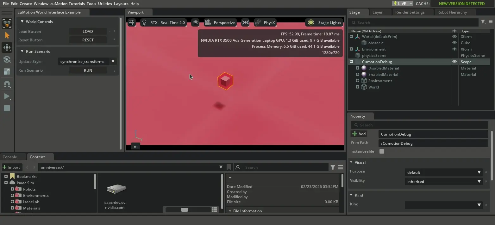
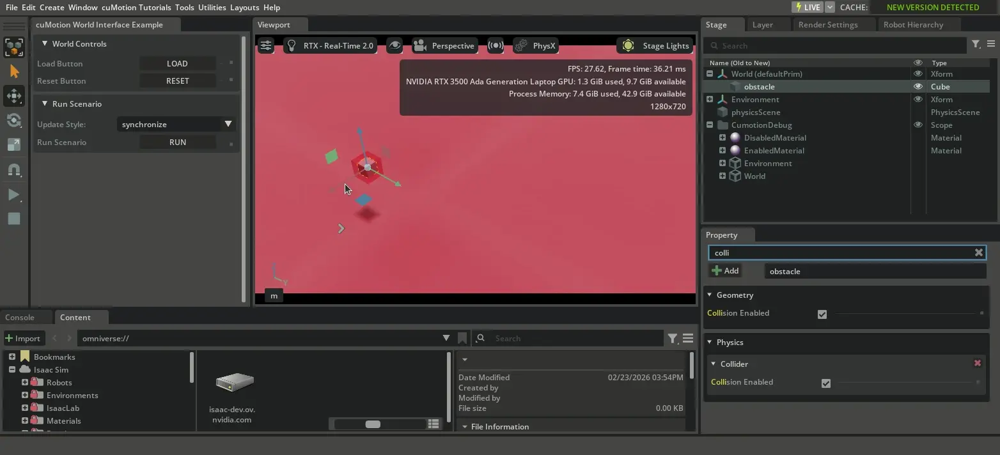
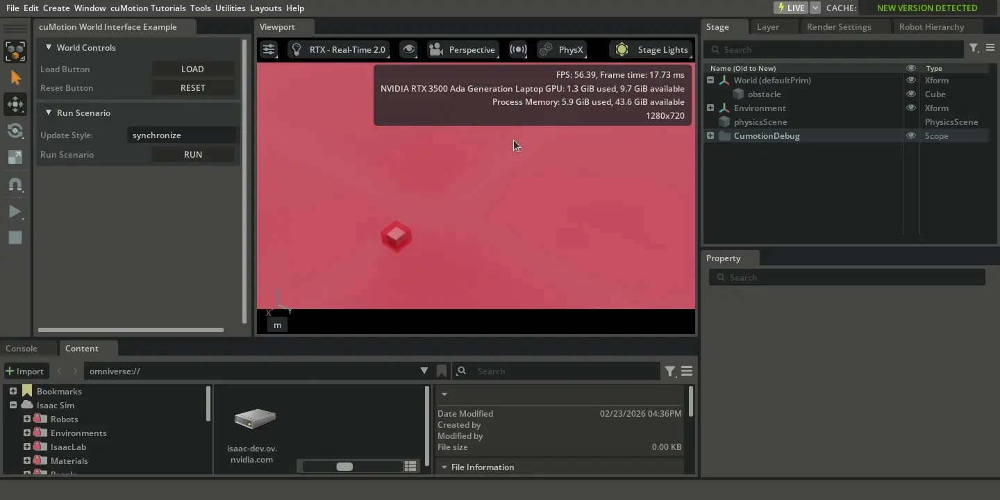
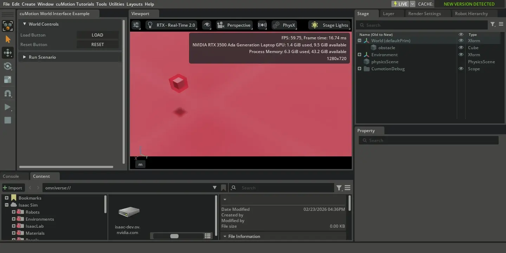

cuMotion World Interface Tutorial#
This tutorial demonstrates how to use the CumotionWorldInterface class in the cuMotion integration to manage world state, obstacles, and robot base transforms for motion planning and control.
By the end of this tutorial, you’ll understand:
How to set up a
CumotionWorldInterfaceHow to discover obstacles using
SceneQueryHow to configure obstacle representations and safety tolerances
How to synchronize world state with different update styles
Prerequisites
Review the Scene Interaction tutorial to understand
SceneQuery,WorldBinding,ObstacleStrategy, and theWorldInterfaceinterface.Know how to add collider presets to objects in Isaac Sim. You can add a collider preset by selecting an object in the stage tree, going to the Property tab, clicking the
+ Addbutton, and selecting Physics > Colliders Preset (or Physics > Rigid Body with Colliders Preset for dynamic objects).
To follow along with the tutorial, run your Isaac Sim instance. Then open Window > Extensions, search for cuMotion Examples (isaacsim.robot_motion.cumotion.examples), and enable it. If you cannot find it, remove @feature from the Extensions search bar and search again.
Within the isaacsim.robot_motion.cumotion.examples extension, there is a fully functional example of the CumotionWorldInterface being used to manage world state,
discover obstacles, and synchronize world updates.
Key Concepts#
The CumotionWorldInterface is the bridge between Isaac Sim’s USD scene and cuMotion’s collision world. It works together with the Motion Generation API classes to provide a complete world state management:
WorldInterface Implementation:
CumotionWorldInterfaceimplements theWorldInterfaceinterface from the Motion Generation API, enabling use withWorldBindingand other Motion Generation API componentscuMotion World Management: Manages obstacles in cuMotion’s internal world representation, providing a
world_viewfor collision queriesDebug Visualization: Optional visualization of collision geometries for debugging
The CumotionWorldInterface works with Motion Generation API classes:
* SceneQuery discovers objects in the USD scene
* ObstacleStrategy configures how obstacle geometries are approximated
* WorldBinding automatically synchronizes world state from USD to cuMotion using the world interface
Searching for Obstacles#
The first step is to create a SceneQuery and use it to discover objects in the USD scene:
# Create scene query to discover obstacles
scene_query = SceneQuery()
# Find all objects in a bounding box
objects = scene_query.get_prims_in_aabb(
search_box_origin=[0.0, 0.0, 0.0],
search_box_minimum=[-100.0, -100.0, -100.0],
search_box_maximum=[100.0, 100.0, 100.0],
tracked_api=TrackableApi.PHYSICS_COLLISION,
)
print("Discovered objects:", objects)
The SceneQuery searches for prims in the specified axis-aligned bounding box that have the specified collision API applied.
Configuring Obstacle Representations#
Obstacle geometries need to be approximated for collision checking. The ObstacleStrategy manages how different geometry types are represented:
In the case of cuMotion, there are not natively supported obstacle types for the shapes
ConeorCylinder, so we use theOBBrepresentation for both, whichCumotionWorldInterfacemaps to the nativecumotion.CUBOIDtype.For
Meshobjects, we use theOBBrepresentation for faster collision checking, but you can also use theTRIANGULATED_MESHrepresentation for more accurate collision checking.The safety tolerance adds extra padding around obstacles to ensure safe clearance during planning.
Note
Since ObstacleRepresentation is a StrEnum, you can use either the enum value (e.g., ObstacleRepresentation.OBB) or the string directly (e.g., "obb") when creating ObstacleConfiguration objects.
See Scene Interaction for details on how to configure obstacle representations.
# Set up obstacle strategy
obstacle_strategy = ObstacleStrategy()
# Set default safety tolerance for all obstacles
obstacle_strategy.set_default_safety_tolerance(0.06)
# Configure specific geometry types
obstacle_strategy.set_default_configuration(Mesh, ObstacleConfiguration("obb", 0.01))
obstacle_strategy.set_default_configuration(Cone, ObstacleConfiguration("obb", 0.01))
obstacle_strategy.set_default_configuration(Cylinder, ObstacleConfiguration("obb", 0.01))
Creating the World Interface and World Binding#
The WorldBinding can be used to connect a CumotionWorldInterface with the USD scene. For the case of this tutorial,
we use the setting visualize_debug_prims=True, which will:
Create debug visualizations of the obstacles existing in the
cumotion.WorldThose objects will be colored in red to indicate that they are enabled for collision checking (no-go region).
Those objects will be colored in green to indicate that they are disabled for collision checking (go region).
# Create world interface with optional debug visualizations
world_interface = CumotionWorldInterface(visualize_debug_prims=True)
# Create world binding
world_binding = WorldBinding(
world_interface=world_interface,
obstacle_strategy=obstacle_strategy,
tracked_prims=objects,
tracked_collision_api=TrackableApi.PHYSICS_COLLISION,
)
# Initialize the world binding (populates obstacles into cuMotion)
world_binding.initialize()
The WorldBinding automatically extracts collision geometry from the tracked prims, and passes the
appropriate data based on the obstacle strategy to the CumotionWorldInterface to be
converted to cuMotion obstacle representations. Note that the CumotionWorldInterface
can also be used without (or partially without) a WorldBinding. For example, you may:
Use
WorldBindingto initially populate the scene, then manually callCumotionWorldInterface.update_obstacle_transforms()when transforms come from perception algorithms rather than the USD scene.Directly populate
CumotionWorldInterfaceusing Isaac Sim Core API objects (Sphere,Cube) for simple scenes.
Synchronizing the World Binding#
The world binding must be synchronized each frame to track moving obstacles and property changes. There are three synchronization methods, as covered in the Scene Interaction tutorial.
Synchronize Transforms Only Updates only the transforms (positions and orientations) of obstacles:
# Update only transforms (fastest, for static obstacles with moving robot base)
world_binding.synchronize_transforms()
Synchronize Properties Only Updates only the properties (sizes, shapes) of obstacles:
Note
cuMotion does not support updating the properties of obstacles. Therefore, all functions of the WorldInterface to update shape properties
are left unimplemented, and will raise a NotImplementedError if called. The only property which supports updating in cuMotion is the collision enabled state.
# Update only properties (for obstacles that change size/shape or collision enabled state)
# Note: cuMotion does not support updating the properties of obstacles.
# The only property which supports updating in cuMotion is the collision enabled state.
world_binding.synchronize_properties()
Synchronize Both Updates both transforms and properties:
# Update both transforms and properties (most complete, but not recommended for high-frequency updates)
world_binding.synchronize()
In a typical update loop, you would call the WorldBinding.synchronize_transforms() method every frame,
and the WorldBinding.synchronize_properties() method less frequently (or only when you know properties have changed).
Note
The synchronization methods described above are only used for collision objects that you are tracking.
The robot base position is not automatically synchronized, and robot base pose is not generally part of the
WorldInterface interface. The CumotionWorldInterface provides an additional function to
update the robot base pose, which is covered in the section that follows.
Updating Robot Base Transforms#
The world interface needs to know the robot base transform to convert between world coordinates and robot base frame coordinates:
# Update world interface with robot base transform
world_binding.get_world_interface().update_world_to_robot_root_transforms(articulation.get_world_poses())
This should be called whenever the robot base moves, and will update the transforms of all obstacles in the cumotion.World to be relative to the robot base frame.
Exploring the Tutorial#
Note
To experiment with this tutorial interactively, see the scenario.py file in the isaacsim.robot_motion.cumotion.examples extension at isaacsim/robot_motion/cumotion/examples/world_interface/scenario.py.
This tutorial provides an interactive environment for experimenting with the CumotionWorldInterface. Here are some ways to explore the tutorial
and learn about the CumotionWorldInterface:
Basic usage: move a single obstacle around the scene and see how the world interface tracks it.
In the example video below, we simply:
Run the example
Move around the cube obstacle (Shift + drag)
When the synchronization is set to
synchronize_transforms, the USD object moves, and the internal cuMotion obstacle transform is internally updated, represented as a red OBB.When the synchronization is set to
synchronize_properties, the USD object moves, but the internal cuMotion obstacle transform is not internally updated.When the synchronization is set to
synchronize, the USD object moves, and the internal cuMotion obstacle transform is internally updated.
{kind=link}

Moving a single obstacle around the scene.#
Adding obstacles
In the example video below, we:
Create a Sphere
Add collider Rigid Body with Colliders preset to the Sphere (so it is a physics collision and a dynamic object)
Reset the example (which re-generates the
CumotionWorldInterfaceand its managedcumotion.World)The Sphere is automatically found by the
SceneQueryand added to the cumotion.World through theWorldBindingandCumotionWorldInterface.
{kind=link}

Adding a ball obstacle to the scene.#
Enabling and disabling obstacles
In the example video below, we:
Create a Capsule
Add the collider preset to the Capsule (so it is a static physics collision object)
Reset the example (which re-generates the
CumotionWorldInterfaceand its managedcumotion.World)The Capsule is automatically found by the
SceneQueryand added to the cumotion.World through theWorldBindingandCumotionWorldInterface.When we enable/disable collisions, we see the internal cuMotion obstacle transform is updated to reflect the enabled/disabled state (unless we are using the
synchronize_transformssynchronization method).
{kind=link}

Enabling and disabling a capsule obstacle.#
Changing obstacle representations
To learn further, try changing some settings in the ObstacleStrategy and see how the CumotionWorldInterface and cumotion.World react.
For example, we can add a Mesh obstacle and represent it as TRIANGULATED_MESH instead of OBB to see the difference in collision accuracy. For example,
the following two videos show an examples of meshes being added when the default representations in the ObstacleStrategy are set to OBB and TRIANGULATED_MESH respectively.
{kind=link}

Representing a mesh as OBB#
{kind=link}

Representing a mesh as TRIANGULATED_MESH#
Summary#
This tutorial demonstrated:
World Interface Setup: Creating a
CumotionWorldInterface(often usingWorldBindingfor centralized world state management)Obstacle Discovery: Using
SceneQueryto discover objects in the USD sceneObstacle Configuration: Configuring obstacle representations and safety tolerances with
ObstacleStrategyWorld Synchronization: Using different update styles (transforms, properties, or both) to keep world state current
Debug Visualizations: Enabling visualizations to understand obstacle representations
The cuMotion world interface provides a centralized, efficient way to manage world state for all motion planning and control algorithms.
Next Steps#
RMPflow tutorial - Using the world interface with reactive control
Graph Planner tutorial - Collision-free path planning with obstacles
Trajectory Generator tutorial - Smooth path execution (collision-unaware)
Trajectory Optimizer tutorial - Optimization-based planning with world awareness